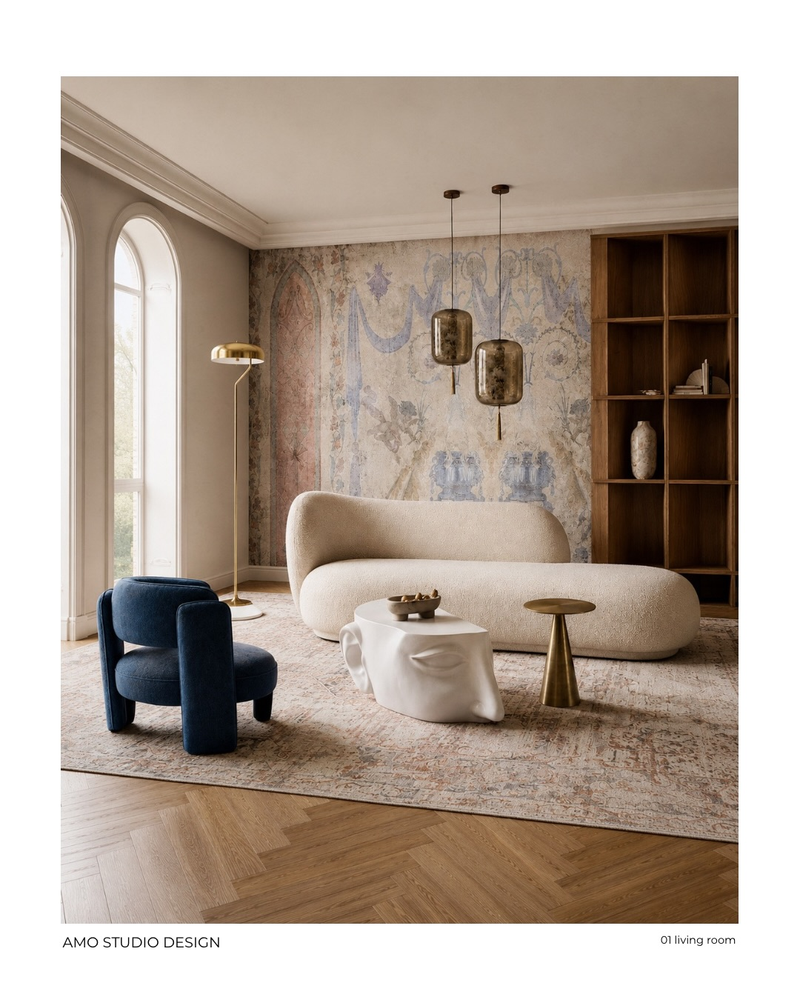
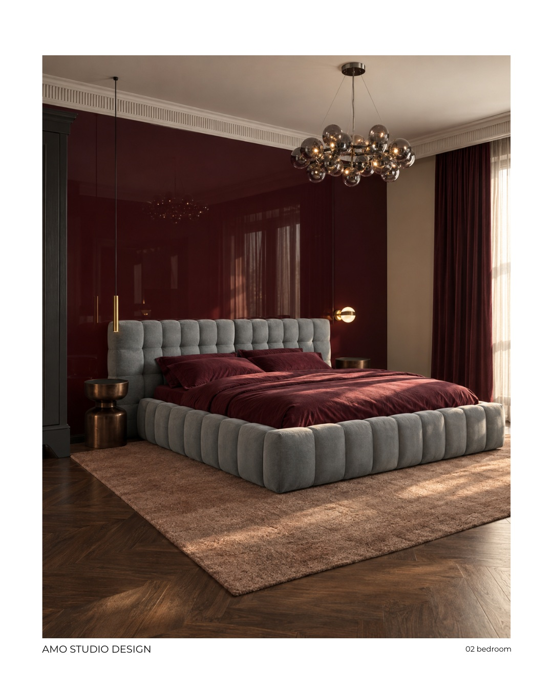

Interior architecture & design · Bucharest
Spaces with
a point
of view.
A dialogue between material, memory and the art of living.
Explore selected work
Quiet in composition.
Expressive in detail.
Sculptural forms, layered textures and considered contrasts. Interiors that make room for a personal way of living.
Selected work
A study in contrastsIn focus / Interior conceptThe depth
The depth
of a colour.
Deep tones, layered textures and warm metallic details.
Enter the bedroom
The complete collection / 09 entries
Spaces & studies

The studioFor the way
For the way
you live.
AMO Studio Design is an interior architecture and design studio based in Bucharest, Romania.
Interior architecture & design tailored to your lifestyle.
This portfolio brings together interior concepts, spatial explorations and design studies.
Get in touch